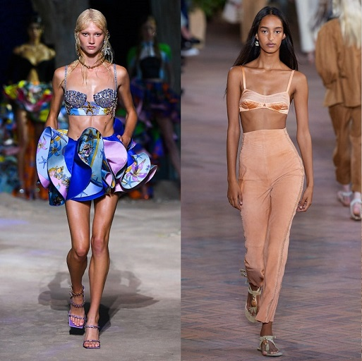
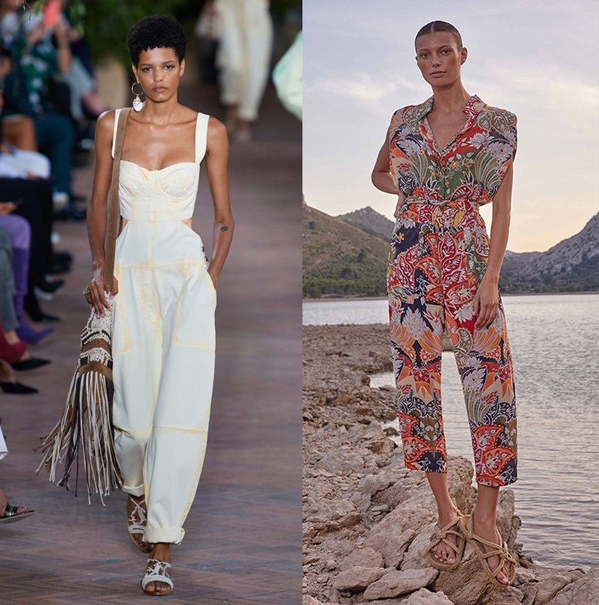
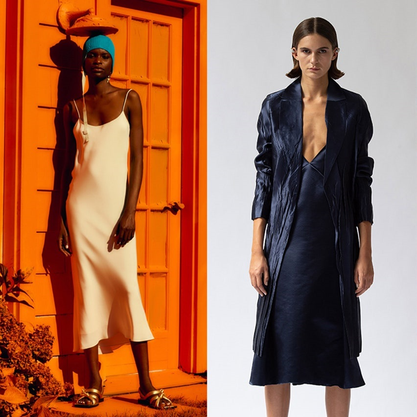
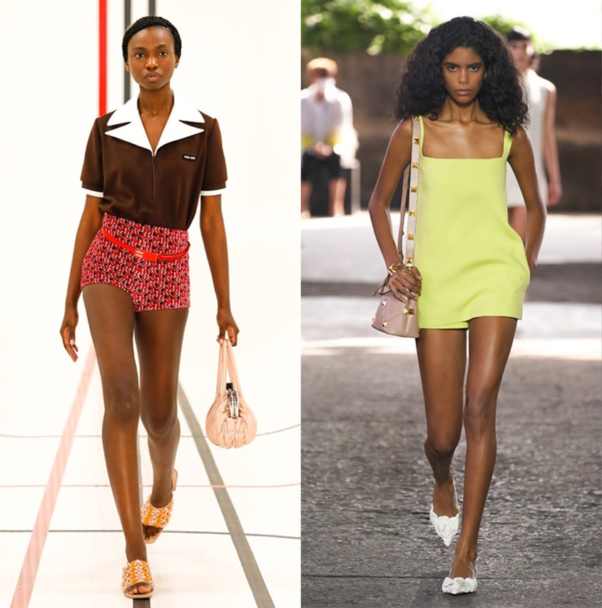

Moda Verano 2021
La temporada verano 2021 lentamente se está gestando, y con su llegada resulta imperioso señalar cuáles, de todas las tendencias de moda que se han propuesto envolvernos durante las semanas internacionales del pasado mes de septiembre, aterrizarán mejor preparadas para ser las protagonistas indiscutibles de un sentimiento estival que se debate intensamente entre la actitud revigorizante, escapista y por momentos también nostálgica.
Aquellas colecciones y lineamientos estilísticos que se desplegaron durante un mes conformaban la antesala de un verano en su punto álgido, que con sus aspiraciones a recuperar el júbilo de todo aquello que nos apasiona han forjado tendencias de moda que vivifican el sentido escapista de la industria, con una dualidad que a veces se torna latente al coquetear con los extremos. Así pues, sirviéndonos de los vestidos que ya no están de moda en verano 2021 y las apuestas que prometen estar en todas partes durante los meses venideros, conoce las 5 tendencias de moda para verano 2021 que se apoderarán del clóset.
Bralettes
Durante la presentación primavera-verano 2021 de la etiqueta francesa Jacquemus los bralettes reclamaron ocupar un lugar de preminencia entre las tendencias de moda más relevantes, y más tarde, en el punto álgido de las colecciones estivales, la prenda en cuestión confirmó que estaba lista para convertirse en una parte esencial de nuestros estilismos veraniegos, en outfits firmados por la casa italiana Alberta Ferretti que nos invitan a incorporar seductores modelos en un estilismo conformado por una chaqueta cropped y una minifalda en un conjunto coordinado, o con el añadido del maximalismo y un cárdigan de acuerdo a Versace. Sea que te propongas llevarlo con unos shorts en tendencia, por debajo de un vestido largo con transparencias o con los cinturones de cadena que regresan directo de los años noventa, no dudes en asignarle un hueco estilístico sobresaliente en tu fondo de armario estival.
Enterizos
A finales del año anterior sentenciábamos que los enterizos se perfilarían como una de las prendas más versátiles de la temporada, y al observar las tendencias primavera verano 2021 de Paris Fashion Week, como también algunas apuestas que se inmiscuyen dentro de la verdadera esencia práctica de los meses estivales, no cabe duda de que la pieza en cuestión se afianza en el podio del costado utilitarista, sin distanciarse por un segundo del estilo en su máxima expresión. Así pues, entre los diseños y cortes que verdaderamente tendrán el poder de simplificar el verano 2021 se hallan, por supuesto, la construcción de la casa italiana, además de la alternativa idónea para sentirse cómoda concebida por Chufy, y una apuesta que promete ser la versión predilecta para acudir a la oficina en los meses venideros, cortesía de la firma Bottega Veneta.
Vestidos lenceros
El ápice de las tendencias de moda nostálgicas de los años noventa viene de la mano de una de las elecciones atemporales que han conseguido catapultarse mejor que cualquier otra en el clóset. Hacemos referencia a los vestidos lenceros, aquella prenda que desfiló por las alfombras rojas más sobresalientes hace más de dos décadas, y en la actualidad regresa para impregnar nuestro verano de una visión sensual que se torna formidable junto al matiz rosa y al encaje en Paco Rabanne, a la sensualidad comedida en Sharon Wauchob o al minimalismo más intrínseco en Tibi.
Hot pants
Los hot pants han sabido trascender la barrera estilística primaveral para postularse como una de las tendencias de moda que se propone recuperar la sensualidad y la osadía, en una variación de materialidades que se extiende desde el algodón hasta los tejidos, y que se traduce en piezas de un color al unísono o en estampados que exclaman la época con mayor dosis de júbilo del año.
Galeria Verano 2021